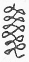
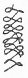

キッコの村の学校にはたまりがありませんでしたから雨がふるとみんなは教室で遊びました。ですから教室はあの水車
小屋みたいな
古臭い
寒天のような教室でした。みんなは
胆取りと
巡査にわかれてあばれています。
「
遁げだ、遁げだ、
押えろ押えろ。」「わぁい、
指噛じるこなしだでぁ。」
がやがやがたがた。
ところがキッコは
席も一番前のはじで胆取りにしてはあんまり小さく巡査にも弱かったものですからその中にはいりませんでした。
机に
座って下を
向いて
唇を
噛んでにかにか
笑いながらしきりに何か書いているようでした。
キッコの手は
霜やけで赤くふくれていました。五月になってもまだなおらなかったのです。右手のほうのせなかにはあんまり
泣いて
潰れてしまった馬の目玉のような赤い円いかたがついていました。
キッコは一
寸ばかりの
鉛筆を
一生けん
命にぎってひとりでにかにかわらいながら８の字を
横にたくさん書いていたのです。（めがね、めがね、めがねの横めがね、めがねパン、くさりのめがね、）ところがみんなはずいぶんひどくはねあるきました。キッコの
机はたびたび
誰かにぶっつかられて
暗礁に
乗りあげた船のようにがたっとゆれました。そのたびにキッコの８の字は
変な
洋傘の
柄のように
変ったりしました。それでもやっぱりキッコはにかにか
笑って書いていました。
「キッコ、
汝の木ペン見せろ。」にわかに
巡査の
慶助が来てキッコの
鉛筆をとってしまいました。「見なくてもい、よごせ。」キッコは立ちあがりましたけれども慶助はせいの高いやつでそれに
牛若丸のようにうしろの机の上にはねあがってしまいましたからキッコは手がとどきませんでした。「ほ、この木ペン、この木ペン。」慶助はいかにもおかしそうに顔をまっかにして笑って自分の
眼の前でうごかしていました。「よごせ慶助わあい。」キッコは一生けん命のびあがって慶助の手をおろそうとしましたが慶助はそれをはなして一つうしろの
机ににげてしまいました。そして「いがキッコこの木ペン耳さ入るじゃぃ。」と
云いながらほんとうにキッコの鉛筆を耳に入れてしまったようでした。キッコは泣いて
追いかけましたけれども慶助はもうひらっと
廊下へ出てそれからどこかへかくれてしまいました。キッコはすっかり
気持をわるくしてだまって
窓へ行って顔を出して雨だれを見ていました。そのうち
授業のかねがなって慶助は教室に帰って来遠くからキッコをちらっとみましたが、またどこかであばれて来たとみえて鉛筆のことなどは
忘れてしまったという風に顔をまっかにしてふうふう
息をついていました。
「わあい、慶助、木ペン返せじゃ。」キッコは
叫びました。「知らなぃじゃ、うなの机さ
投げてたじゃ。」慶助は云いました。キッコはかがんで机のまわりをさがしましたがありませんでした。そのうちに先生が入って来ました。
「
三郎、この時間うな木ペン
使ってがら、おれさ
貸せな。」キッコがとなりの三郎に云いました。
「うん、」三郎が机の
蓋をあけて本や
練習帖を出しながら
上のそらで答えました。
課業がすんでキッコがうちへ帰るときは雨はすっかり晴れていました。
あちこちの木がみなきれいに光り山は
群青でまぶしい
泣き
笑いのように見えたのでした。けれどもキッコは大へんに心もちがふさいでいました。
慶助はあんまりいばっているしひどい。それに
鉛筆も
授業がすんでからいくらさがしてももう見えなかったのです。どの
机の足もとにもあのみじかい
鼠いろのゴムのついた鉛筆はころがっていませんでした。
新学期からずうっと
使っていた鉛筆です。おじいさんと
一緒に町へ行って
習字手本や読方の本と一緒に買って来た鉛筆でした。いくらみじかくなったってまだまだ
使えたのです。使えないからってそれでも
面白いいい鉛筆なのです。
キッコは
樺の林の間を行きました。樺はみな小さな青い
葉を出しすきとおった雨の
雫が
垂れいい
匂がそこらいっぱいでした。おひさまがその葉をすかして古めかしい金いろにしたのです。
それを見ているうちに、
（木ペン
樺の木に
沢山あるじゃ）キッコはふっとこう思いました。けれども樺の木の小さな
枝には鉛筆ぐらいの太さのはいくらでもありますけれども
決して黒い心がはいってはいないのです。キッコはまた
泣きたくなりました。
そのときキッコは
向うから
灰いろのひだのたくさんあるぼろぼろの
着物を着た一人のおじいさんが大へん考え
込んでこっちへ来るのを見ました。（あのおじいさんはきっと
鼠捕りだな。）キッコは考えました。おじいさんは
変な
黒い
沓をはいていました。そしてキッコと行きちがうときいきなり顔をあげてキッコを見てわらいました。「今日学校で
泣いたな。目のまわりが
狸のようになっているぞ。」すると頭の上で鳥がピーとなきました。キッコは顔を赤くして立ちどまりました。
「何を泣いたんだ。正直に話してごらん。聞いてあげるから。」
鳥がまた頭の上でピーとなきました。するとおじいさんは顔をしかめて上を
向いて「おまえじゃないよ、やかましい、だまっておいで」とどなりました。
すると鳥はにわかにしいんとなってそれから
飛んで行ったらしくぼろんという羽の音も聞え
樺の木からは
雫がきらきら光って
降りました。「いってごらん。なぜ泣いたの。」
おじいさんはやさしく
云いました。「木ペン
失ぐした。」キッコは
両手を目にあててまたしくしく泣きました。「木ペン、なくした。そうか。そいつはかあいそうだ。まあ泣くな、見ろ手がまっ
赤じゃないか。」
おじいさんはごそごその
着物のたもとを
裏返しにしてぼろぼろの
手帳を出してそれにはさんだみじかい
鉛筆を出してキッコの手に
持たせました。キッコはまだ
涙をぼろぼろこぼしながら見ましたらその鉛筆は
灰色でごそごそしておまけに心の色も黒でなくていかにも
変な
鉛筆でした。キッコはそこでやっぱりしくしく泣いていました。「ははああんまり
面白くもないのかな。まあ
仕方ない、わしは外に
持っていないからな。」おじいさんはすっと行ってしまいました。
風が来て樺の木はチラチラ光りました。ふりかえって見ましたらおじいさんはもう林の
向うにまがってしまったのか見えませんでした。キッコはその
枝きれみたいな変な鉛筆を持ってだまってかくしに入れてうちの方へ歩き出しました。
次の日学校の一時間目は
算術でした。キッコはふとああ木ペンを持っていないなと思いました。それからそうだ
昨日の変な木ペンがある。あれを
使おう一時間ぐらいならもつだろうからと考えつきました。
そこでキッコはその鉛筆を出して先生の
黒板に書いた
問題をごそごその
藁紙の
運算帳に書き
取りました。
48×62＝ 「みなさん一けた目のからさきにかけて。」と先生が
云いました。「一けた目からだ。」とキッコが思ったときでした。
不思議なことは鉛筆がまるでひとりでうごいて
96と書いてしまいました。キッコは自分の手首だか何だかもわからないような気がして
呆れてしばらくぼんやり見ていました。「一けた目がすんだらこんどは二けた目を
勘定して。」と先生が
云いました。するとまた鉛筆がうごき出してするするっと
288と二けた目までのとこへ書いてしまいました。キッコはもうあんまりびっくりして顔を赤くして
堅くなってだまっていましたら先生がまた「さあできたら
寄せ算をして下さい。」と云いました。またはじまるなと思っていましたらやっぱり、もうただ一いきに一本の線もひっぱって
2976と書いてしまいました。
さあもうキッコのよろこんだことそれからびっくりしたこと、何と云っていいかわからないでただもうお
湯へ入ったときのようにじっとしていましたら先生がむちを
持って立って「では
吉三郎さんと
慶助さんと出て
黒板へ書いて下さい。」と云いました。〔キッコは
筆記帳をもってはねあがりました。〕そして
教壇へ行ってテーブルの上の
白墨をとっていまの
運算を書きつけたのです。そのとき慶助は顔をまっ
赤にして半分立ったまま自分の
席でもじもじしていました。キッコは
9の字などはどうも少しなまずのひげのようになってうまくないと思いながらおりて来たときようやく慶助が立って行きましたけれども
問題を書いただけであとはもうもじもじしていました。
先生はしばらくたって「よし」と云いましたので慶助は
戻って来ました。先生はむちでキッコのを
説明しました。
「よろしい、大へんよくできました。」キッコはもうにがにがにがにがわらって戻って来ました。（もう
算術だっていっこうひどくない。字だって
上手に書ける。算術帳とだって国語帳とだって
雑作なく書ける）
キッコは思いながらそっと
帳面をみんな出しました。そして算術帳国語帳理科帳とみんな書きつけました。すると
鉛筆はまだキッコが手もうごかさないうちにじつに早くじつに
立派にそれを書いてしまうのでした。キッコはもう
大悦びでそれをにがにがならべて見ていましたがふと算術帳と理科帳と取りちがえて書いたのに気がつきました。この木ペンにはゴムもついていたと思いながら
尻の方のゴムで消そうとしましたらもう
今度は鉛筆がまるで
踊るように二、三べん
動いて間もなく
表紙はあとも
残さずきれいになってしまいました。さあ、キッコのよろこんだことこんないい鉛筆をもっていたらもう
勉強も何もいらない。ひとりでどんどんできるんだ。
僕はまず家へ帰ったらおっ
母さんの前へ行って百けたぐらいの
六かしい
勘定を一ぺんにやって見せるんだ、それからきっと図画だってうまくできるにちがいない。僕はまず
立派な
軍艦の絵を書くそれから水車のけしきも書く。けれども早く
耗ってしまうと
困るなあ、こう考えたときでした鉛筆が
俄かに
倍ばかりの長さに
延びてしまいました。キッコはまるで
有頂天になって
誰がどこで何をしているか先生がいま何を
云っているかもまるっきりわからないという風でした。
その日キッコが学校から帰ってからのはしゃぎようと云ったら
第一におっかさんの前で十けたばかりの
掛算と
割算をすらすらやって見せてよろこばせそれから弟をひっぱり出して
猫の顔を
写生したり
荒木又右エ門の
仇討のとこを
描いて見せたりそしておしまいもうお話を自分でどんどんこさえながらずんずんそれを絵にして書いていきました。その絵がまるでほんもののようでしたからキッコの弟のよろこびようと云ったらありませんでした。
「さあいいが、その
山猫はこの
栗の木がらひらっとこっちさ
遁げだ。
鉄砲打ぢはこうぼかげだ。山猫はとうとうつかまって
退治された。耳の中にこう云う玉入っていた。」なんてやっていました。
そのうちキッコは算術も作文もいちばん図画もうまいので先生は何べんもキッコさんはほんとうにこのごろ勉強のために出来るようになったと
云ったのでした。二
学期には
級長にさえなったのでした。その
代りもうキッコの
威張りようと云ったらありませんでした。学校へ出るときはもう村中の
子供らをみんな
待たせて
置くのでしたし学校から帰って山へ行くにもきっとみんなをつれて行くのでうちの
都合や何かで行かなかった子は
次の日みんなに
撲らせました。ある朝キッコが学校へ行こうと思ってうちを出ましたらふとあの
鉛筆がなくなっているのに気がつきました。さあキッコのあわて方ったらありません。それでも
仕方なしに学校へ行きました。みんなはキッコの顔いろが
悪いのを大へん
心配しました。
算術の時間でした。「一ダース二十
銭の鉛筆を二ダース半ではいくらですか。」先生が云いました。みんなちょっと
運算してそれからだんだんさっと手をあげました。とうとうみんなあげました。キッコも
仕方なくあげました。「キッコさん。」先生が云いました。
キッコは
勢よく立ちましたがあともう云えなくなって顔を赤くしてただもう〔以下原稿なし〕